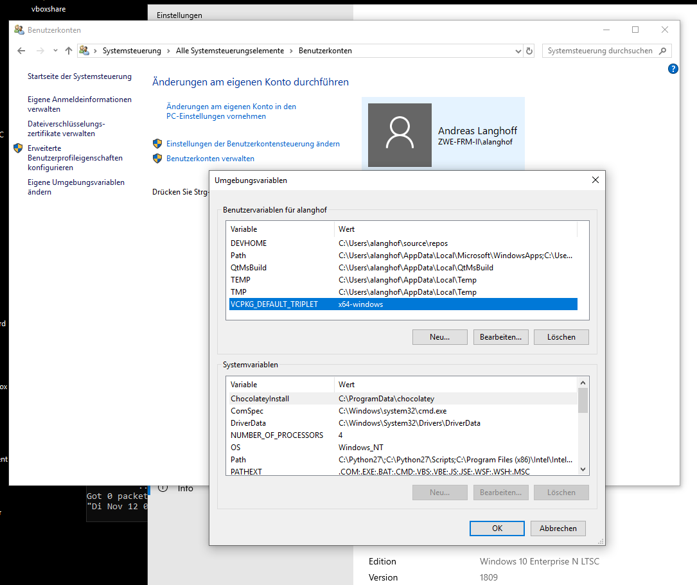

1.) Install Visual Studio 2019 Comunity Edition , C++
Vom Command prompt aus:
2.) Install vcpkg package manager with: (here I install an older version on purpose)
git clone https://github.com/microsoft/vcpkg (später reicht git pull innerhalb der vcpkg directory)
cd vcpkg
(git tag -l
git checkout 2019.11)
.\bootstrap-vcpkg.bat
.\vcpkg integrate install
3.) Set up vcpkg to use x64 triplets by default by setting environment variable: VCPKG_DEFAULT_TRIPLET=x64-windows

4.) Install boost , magic_enum und opencv with vcpkg. As per 3.) this should install only the 64bit libraries:
vcpkg install boost
vcpkg install magic-enum
vcpkg install opencv
some install issues have been resolved by
-installing also " VS2019 Windows 10 sdk
- installing English language pack on your machine
5.) git clone https://github.com/zweistein-frm2/charm.git git clone https://github.com/palacaze/sigslot.git git clone https://github.com/timniederhausen/asio-extensions.git You should have the following directory structure: |-----\asio-extensions | -----|-----\charm | |-----\sigslot